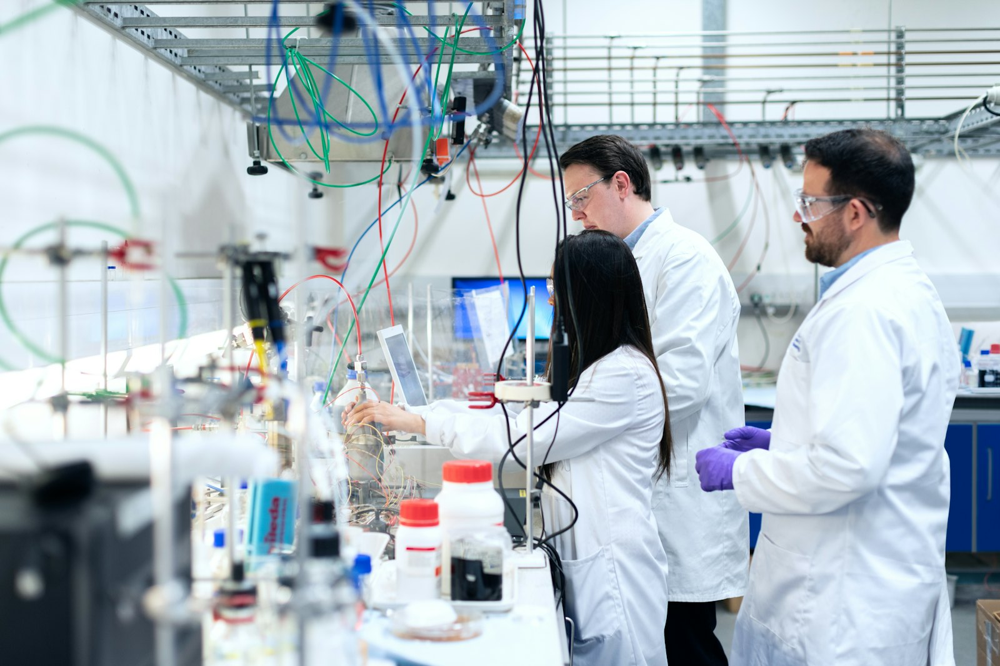

Raw Material Selection
Lots are chosen at source from trusted Saurashtra farms — graded, sampled and approved before purchase.
Every SAURAM batch is tested before it earns the seal — because a promise printed on a pack means nothing unless someone checks it, every single time.
Our Philosophy
That single sentence is our quality manual. Everything else — the sampling plans, the moisture meters, the batch records — exists to keep it true at scale.
Quality at SAURAM starts in the field, not in the lab. We select raw material at source, test on arrival, test again after processing, and hold a retention sample of every batch we dispatch.

The Four Pillars
Lots are chosen at source from trusted Saurashtra farms — graded, sampled and approved before purchase.
Moisture, purity, foreign matter and aroma are checked on every incoming lot and every finished batch.
Stainless contact surfaces, pest-controlled premises and documented cleaning schedules on every line.
Specifications, packing and documentation prepared to international buyer requirements.
The Testing Process
Random samples drawn from every incoming lot before it is accepted.
Grain size, colour, uniformity and foreign matter checked by trained eyes.
Digital moisture testing keeps every product inside safe storage limits.
Admixture and damaged-grain counts against our published specifications.
Oil and ghee batches pass a sensory panel — the oldest lab there is.
Only after every check clears does a batch get its code and the SAURAM seal.
Packaging Standards
Great processing is wasted if the pack lets it down. Ours is built to deliver the product exactly as it left the line.
Certifications
Batch-wise lab testing
Lic. no. placeholder
Audited clean lines
Food-grade, aroma-sealed
International grade specs
Quality Timeline
Sampling, moisture and purity checks. Lots that fail go back — whole.
Multi-stage de-stoning, sieving and gravity separation. No chemicals, no polish.
Milling or cold pressing, followed by a full re-test of the finished product.
Aroma-sealed packs, checked weights, batch and date printed on every unit.
A sealed sample of every batch stays with us until well past its shelf life.